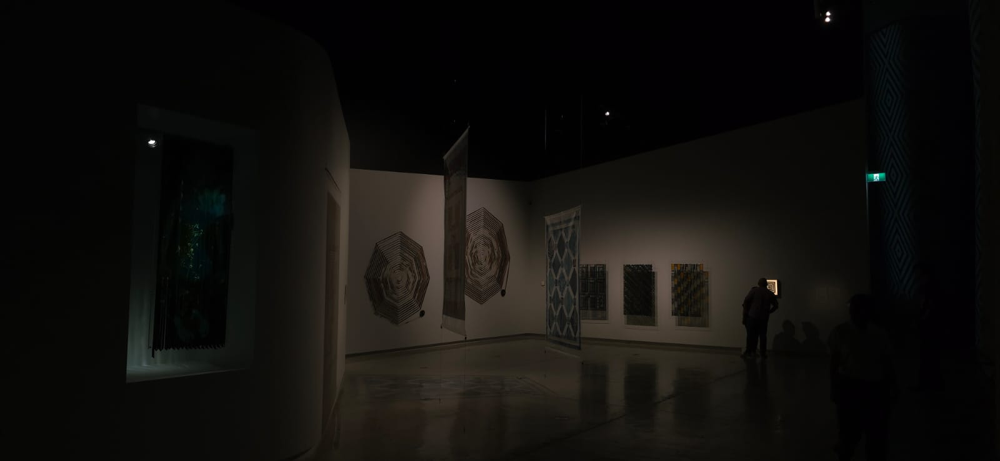

Photography is an expressive art of emotion. It is the reality of finding the extraordinary within ordinary and the powerful within calm. My work is defined and driven by capturing the beauty of the world, not as it rushes by but as it feels when we stop to breathe. I believe memories hold the significance of a story, but photographs are the things which carry the weight. Whether it encompasses the soft feel of a forest in the rain or the sharp clarity of a professional portrait. My mission is to provide my clients with images which feel timeless and invite you to step within a space where noise fades and the atmosphere shines.
